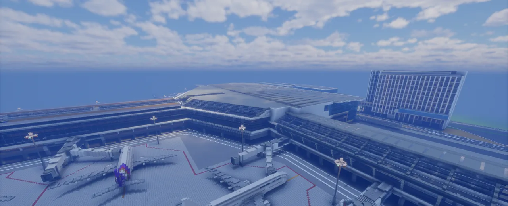
特急・特快直達光瀨市區，最快 11 分鐘。三日券 3,900 円、五日券 4,800 円，可無限次搭乘所有非指定席列車。
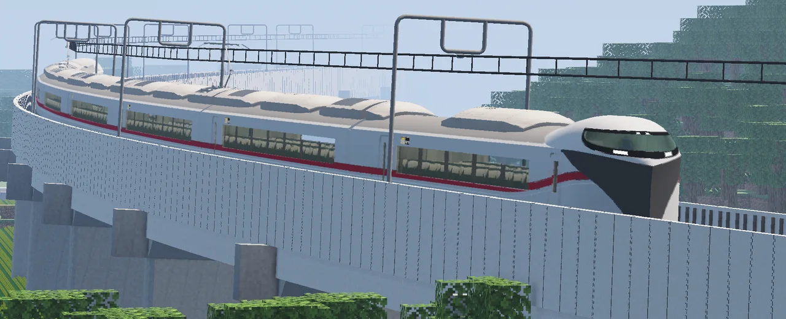
勝守、天鳥崎、本磯島 一車直達。新 8000 形，最高時速 160 公里，全車指定席，備有 USB 充電口。
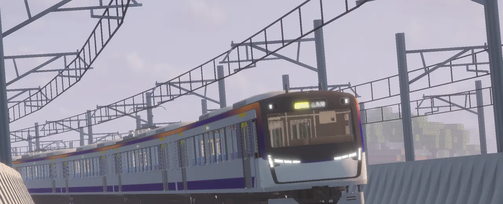
2026年10月起投入營運，最高時速 160 公里。連結機場，也行駛名島、勝守、平倉方向，通勤與出遊都更從容。
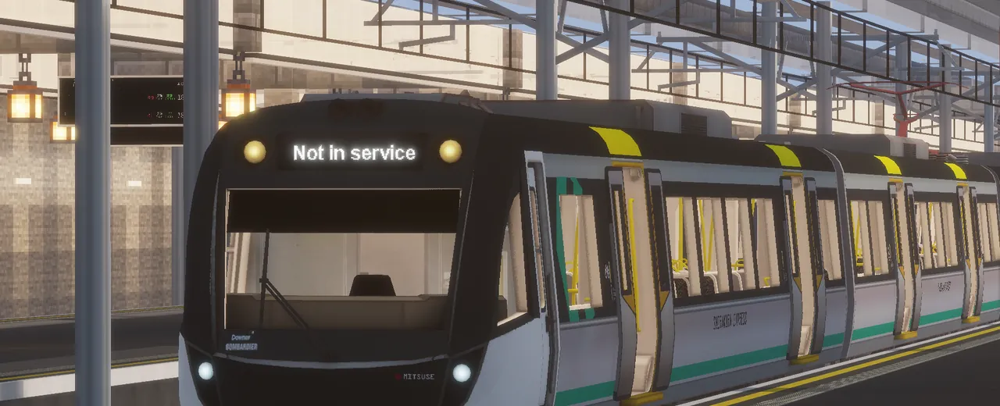
陪伴大家 26 年的 10000系，預定於 2026 年底退役。歡迎把握最後的乘車機會。
尖峰時段增加班次，等車時間更短。
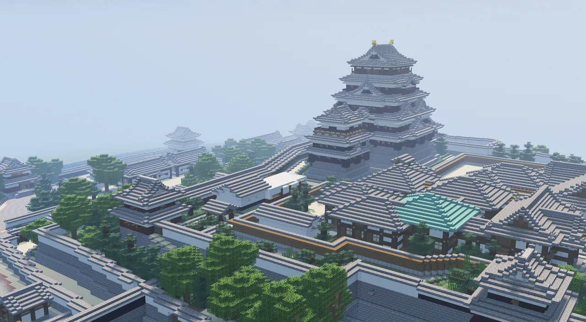
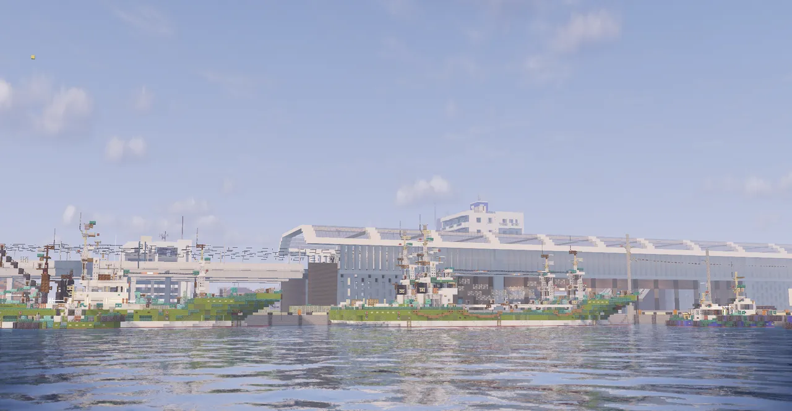
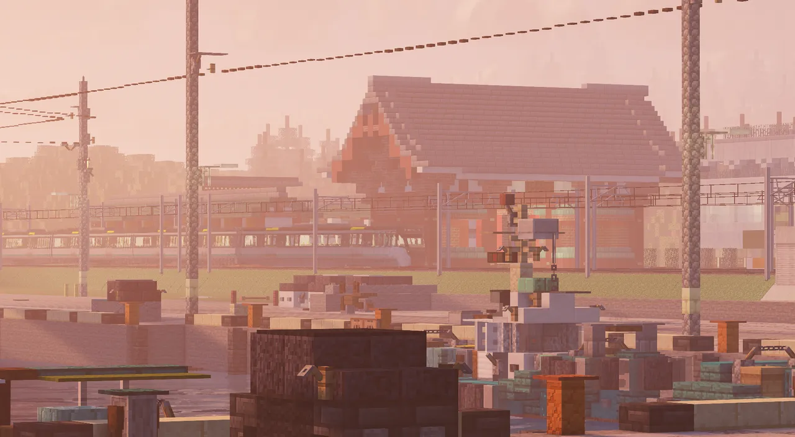
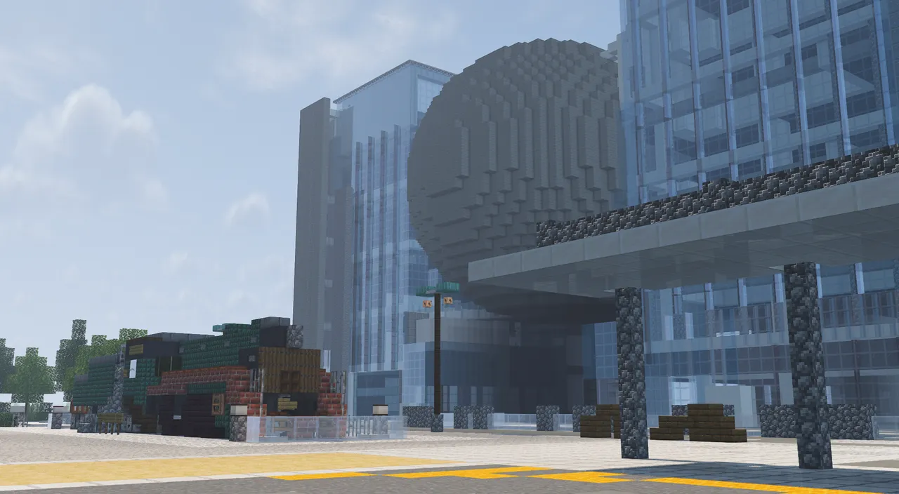
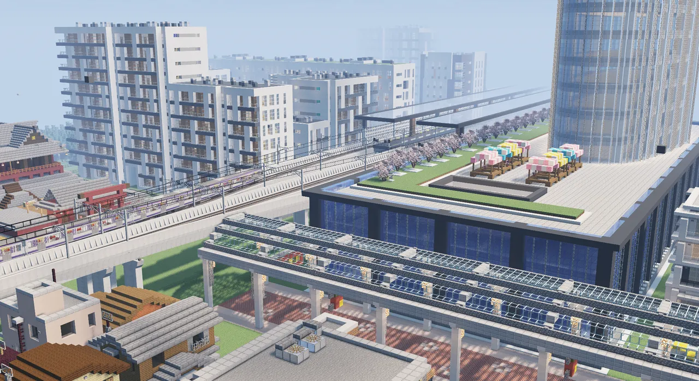
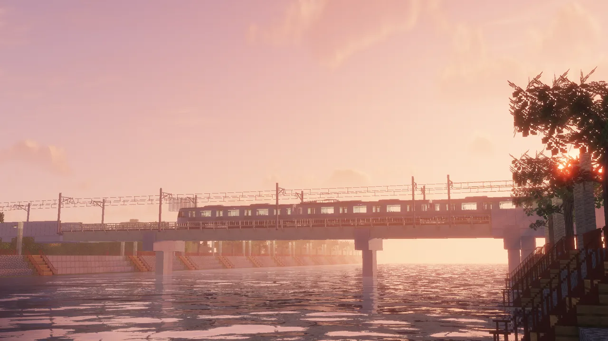
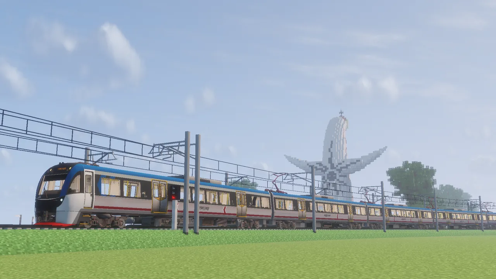
點選車站，可查看接下來的發車與時刻表；想看列車位置請到「即時列車動態」。